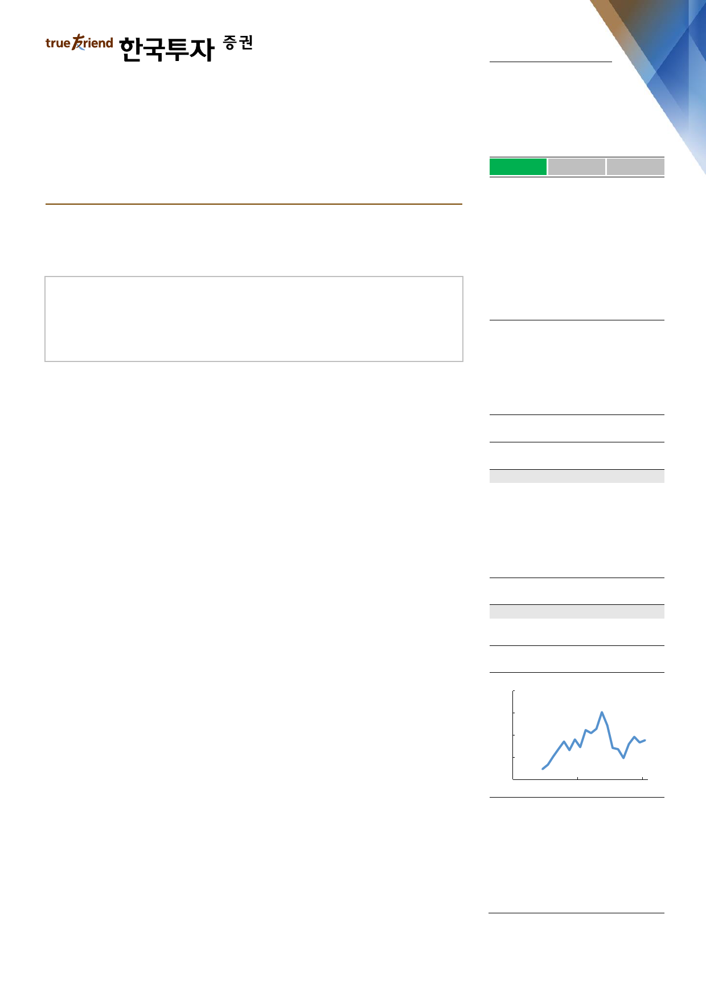

실적 Review
2019. 2. 15
오리온(271560)
하 회
부 합
영업이익의 컨센서스 대비를 의미
상 회
아직, 해볼 만하다
중국의 작은 춘절 효과 및 일회성 비용으로 컨센서스 하회
베트남 등 타지역 실적은 신제품과 extension 전략으로 예상보다 성장 빨라
2019년 1분기 중국 실적 회복하면 시장 불신 축소될 것
Facts : 중국 실적 일시적 이유들로 기대보다 저조
4분기 매출액과 영업이익은 전년동기대비 각각 15.5%, 246.5% 증가해 영업이익
기준으로 우리 예상을 7.4%, 컨센서스를 11.0% 하회했다. 사드 이슈로 부진했던
전년동기에 비해서는 실적이 개선되었다. 하지만 중국 실적이 2019년 춘절과 연
관된 가수요가 크지 않고, 격려금 등 인건비가 늘어 기대에 못 미쳤다. 반면 베트
남을 비롯한, 한국, 러시아의 실적은 모두 기대를 웃돌았다. 한국은 가장 높은 신
제품 성공률을 보이며 점유율이 상승 중이고, 베트남도 시장 성장에 카테고리 확
장 효과를 톡톡히 누리고 있는 것으로 보인다. 한편 영업외수지에서는 이천 공장
화재 보험금 86억원이 발생했다.
Pros & cons : 중국은 회복의 시그널이, 타 지역은 단기 악재 물러가
12월 중국 매출액은 768억원(전월 666억원)으로 이른 춘절 효과가 우려보다 더
작았다. 춘절 전 가수요가 작아진 이유는 회자된 바대로 2018년보다는 2019년에
생산된 제품, 즉 좀 더 신선한 제품에 대한 구매가 더 많았던 탓이다. 신제품 판매
가 부진하다거나 기존 제품의 회전이 예상보다 부진하다는 판단은 아직 이르다.
12월 판매는 부진했지만 2019년 1월 판매는 1,500억원에 달했던 전년동월과 큰
차이가 없는 것으로 파악되기 때문이다. 2월 판매까지 전년동기(400억원대)보다
많다면, 12월 부진의 의미는 퇴색될 것이다. 춘절 기간 차이로 인한 월별 가수요의
등락을 제외한 합산 중국 매출액은 증가하는 것이기 때문이다. 중국법인의 영업이
익률도 일회성 비용(일회성 인건비 52억원)을 제거할 경우 12월에도 16.4%를
기록해 전년동기대비 현격히 개선되었다. 이밖에 한국은 로컬 매출액이 5% 이상
증가하며 점유율 상승을 이어갔다. 베트남도 내수 매출액 증가율이 26%이면 춘절
효과 외에도 점유율이 오른 것이 확실하고, 러시아도 도매상 구조조정 이후 실적
이 안정화되었다.
Action : 1분기 중국 실적 개선되면 주가 지표 향상 전망
12월보다는 1, 2월까지의 합산 중국 매출액 동향을 확인하고 주가는 방향성을 잡
을 것으로 전망된다. 예상대로 중국 제과시장은 경기 둔화 우려와는 달리 한자릿
매수(유지)
목표주가: 150,000원(유지)
Stock Data
KOSPI(2/14)
주가(2/14)
시가총액(십억원)
발행주식수(백만)
52주 최고/최저가(원)
일평균거래대금(6개월, 백만원)
유동주식비율/외국인지분율(%)
주요주주(%) 이화경 외 5 인
국민연금
2,226
116,000
4,586
40
155,000/88,600
15,217
56.2/37.9
43.8
7.1
Valuation 지표
PER(x)
PBR(x)
ROE(%)
DY(%)
EV/EBITDA(x)
EPS(원)
BPS(원)
2017A
54.7
3.2
5.8
0.6
35.7
1,912
33,107
2018F
25.7
3.1
12.9
0.5
13.1
4,509
37,014
2019F
20.5
2.8
14.3
0.7
11.7
5,657
41,871
주가상승률
절대주가(%)
KOSPI 대비(%p)
1개월
(4.1)
(11.9)
6개월
(1.7)
(0.2)
12개월
11.0
19.1
주가추이
(천원)
174
148
122
96
70
Feb-17
자료: FnGuide
Feb-18
Feb-19
이경주
kjlee@truefriend.com
김지윤
jiyoon.kim@truefriend.com